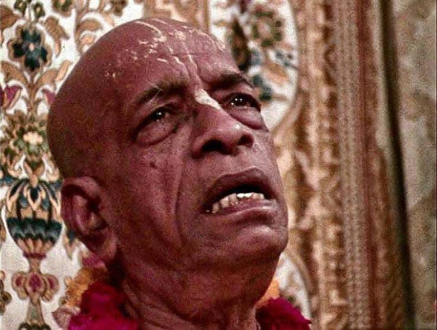

How Early Disciples Had Serious Doubts about Srila Prabhupada (3 Minute Read)
Posted on : 4th April, 2025

In case you find yourself in a situation where you genuinely doubt whether Krsna consciousness is not just another sectarian religion that attacks other sectarian religions, you are not alone. Even the early disciples had these doubts since impersonalism is deeply ingrained within us, especially in the Western world. Read on to find out what happened in this nice pastime recollected by Hayagriva Dasa in his book Hare Krishna Explosion.
Umapati and I are concerned over Swamiji's attacks on the Buddhists. Although Gautama Buddha is mentioned in Srimad-Bhagavatam as an avatar, Swamiji relegates his gospel to a mere attack on animal slaughter.
"Lord Buddha came to earth to preach ahimsa," he tells us. "Nonviolence. And in order to do this, he had to deny the Vedas because the Vedas permit animal sacrifice under certain conditions. So Buddha rejected the Vedas and preached nirvana, void: Since life is suffering, best to negate everything. Yes, material life is suffering, but God is not void. God is a person, and human life is a means for us to awaken our relationship with this Supreme Person. Therefore we call the Buddhist philosophy atheistic."
When Umapati and I return to Mott Street, we discuss Swamiji's lecture.
"What of the eternal and omniscient Tathagatas?"
"Don't they exist in the realm of nirvana? And isn't nirvana emptiness with form?"
"And what about Buddha? Isn't he worshipped as the embodiment of the Tathagatas?"
While we are criticizing Swamiji's attack on Buddhism, Kirtanananda comes in and announces that he's leaving the Swami. "I just don't like what's going on," he says.
"That's just what we were talking about," Umapati says.
"You fools!" Kirtanananda says, suddenly turning against us. He had lied just to get our confidence. "Do you think I would ever leave the Swami? You won't solve anything by sitting in here complaining. You have to go and talk to him."
Finally agreeing, we approach Swamiji in his back apartment.
"There are some points we're having trouble understanding," I begin, speaking softly.
"And what is that?" Swamiji asks, ready for anything. I feel smaller and smaller.
"Why do you call the Buddhists atheists?" I manage to ask.
"Because they are," he says.
"But we don't understand that," I persis. "That just contradicts the Sutras we've read."
"They have no personal conception of God," he replies, and they deny the Vedas. Therefore they're atheists."
This doesn't satisfy me. It seems an oversimplification.
"But atheists don't believe in a Supreme Being or supreme consciousness behind the universe," I venture. "As far as I can see, when Buddha or the Buddhists speak of divine consciousness or the one mind, they're speaking about God, and so they can't properly be called atheists."
I ventured too far. Swamiji suddenly jumps to his feet.
"If I say they're atheists, they're atheists!" he shouts, pointing to emphasize every word. "They deny Krishna, the Supreme Personality of Godhead, and they deny the Vedas, and they reject Vedic culture, and therefore they're atheists!"
We haven't seen him so angry since he yelled at Kirtanananda. I want to hide under the rug. I fear that if he doesn't quiet down, something terrible might happen. And my stupid questions responsible!
"Yes, of course," I quickly agree, trying to rectify my affront.
Swamiji sits back behind the footlocker, his fury seeming to leave as quickly as it came. After a long silence, I suggest that I thought I had recalled reading certain passages in which Buddha might have spoken of God.
"Then you bring such passages," he says "But you will find that there are none."
That evening on Mott Street, we thumb through the Buddhist Sutras without finding any overt mention of God, at least not in the Vedic sense. God is only vaguely implied by divine consciousness" and the "Tathagatas," which seem to have some attributes of God. Swamiji's right.
From the Vedic viewpoint, Buddha is certainly an atheist.
Nonetheless, we choose passages that best support our case and take them to Swamiji.
"You're right," I begin. "There's no mention of God."
"Just see!"
"But we found some passages that imply -- "
He shakes his head, indicating that I'm not to bother. "A preacher has to attack," he says, ending the discussion.
I feel very small and very stupid, a dumb oaf before majesty, a pedantic bookworm before divine grace.
(HKE 5: The Hare Krishna Explosion)